Pitfall
A 3D survival game where you play a tiny ant sneaking through an antlion den to bring food home to your colony.
Overview
The antlion has stolen your colony's food. You play a tiny ant who has to venture into its underground caves, find the leaves, carry them home one at a time and avoid the antlion patrolling the dark tunnels. Some leaves are locked behind gates you open with levers, and stepping into a sand pit brings every antlion running.
Goal of the Project
We wanted a tense "cat-and-mouse" survival game for midcore to hardcore players who like strategy and pressure: surviving the chase, beating the objective and learning how the enemy behaves (Survivors, Conquerors and Masterminds in BrainHex terms). My part was to bring the world and its main enemy to life, from modeling the antlion to making it hunt you.
My Role
Modeling & Environment
- Antlion — modeled the main enemy, with glowing red eyes and big jaws.
- Mushrooms, rocks & roots — modeled the props that fill the caves, and made the mushrooms glow.
- Environment — designed the look of the map by placing objects through the caves.
- Lighting — kept the caves dark and tense, and used the glowing mushrooms as landmarks so players can find their way.
- Leaf animation — animated the leaf item players collect.
Gameplay & Testing
- Antlion AI — made the antlion roam on its own, notice the player nearby, chase and attack.
- Game flow — built the menu flow and the win and lose scenes.
- Sound — added sound effects and background music for the menu and buttons.
- Testing & feedback — debugged each level and helped run playtests to gather feedback.
How to Play
Move with WASD, hold Shift to sprint,
Space to jump and E to interact.
-
Pick a difficulty
Easy needs 3 leaves, Medium needs 4 and Hard needs 5.
-
Find a leaf
Search the den and pick up a leaf. You can only carry one at a time.
-
Pull the levers
Some leaves are locked away. Find a lever and press
Eto open the gate. -
Bring it home
Carry it back to your home hole and press
Eto drop it off. -
Stay alive
Sprinting uses stamina, and three antlion bites end the game. If you fall into a pit, spam
Eto climb out before you sink. -
Feed the colony
Bring home every leaf to win.
Storyboard
Our first idea was "The AntLion Maze", a top-down game where the ant collects candy in a maze while the antlion chases it. In critique, it felt too much like Pac-Man. We redesigned it as a first-person 3D game in underground caves, which made the antlion feel bigger and scarier and gave players more room to explore, hide and plan their route.
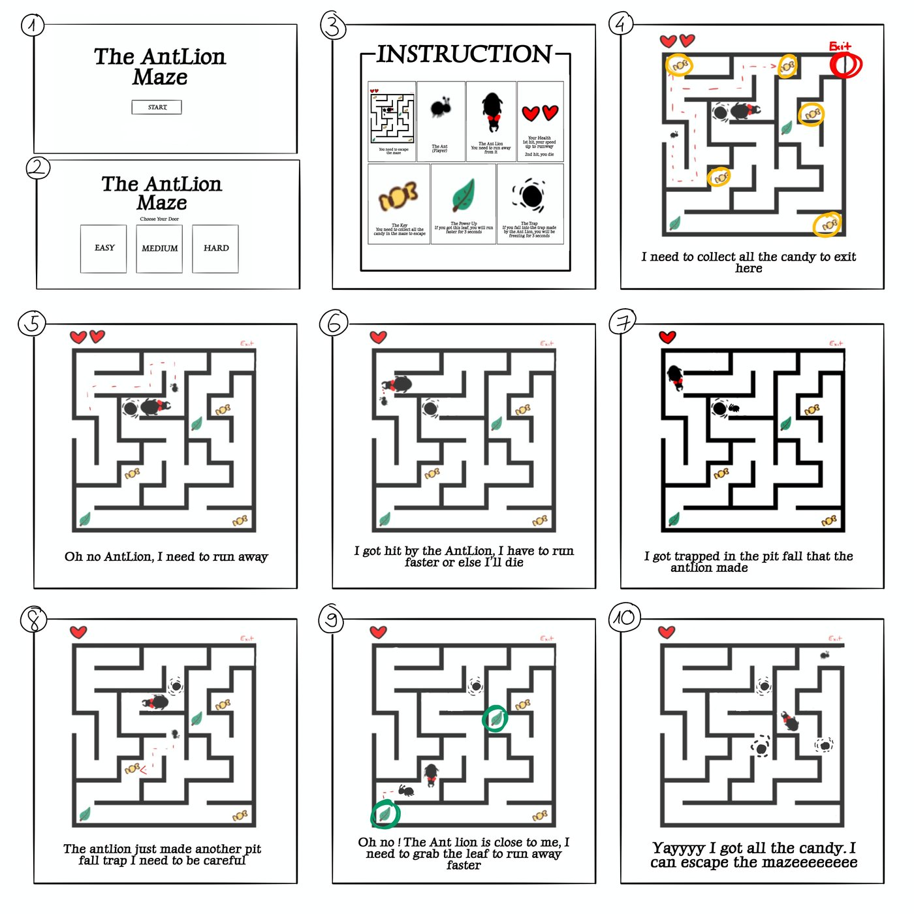
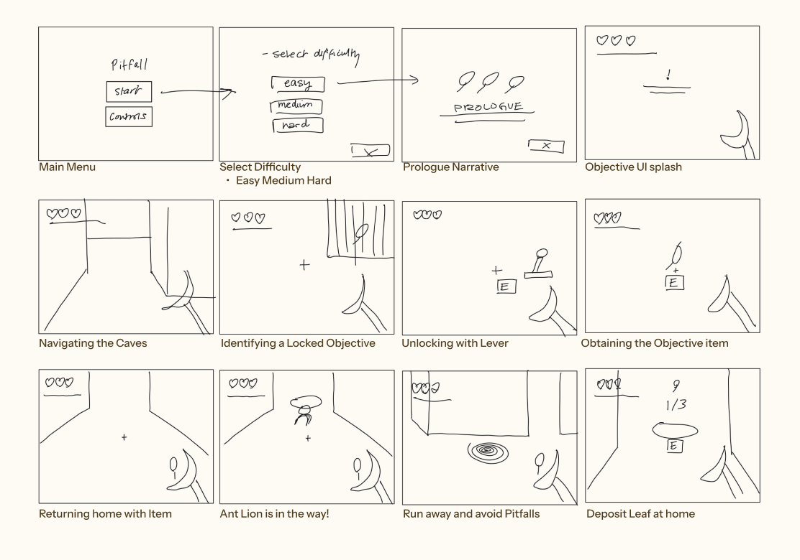
Core Mechanics
The game loop is simple: explore, grab a leaf, avoid the antlion and bring it home. You can only carry one leaf at a time, so every trip is a new risk.
Core
- Cave navigation — connected cave rooms with pitfalls and dead ends, so every route needs planning.
- Resource collection — find each leaf and carry it back to the colony, one at a time.
- Antlion avoidance — the antlion patrols and chases, so players have to keep adapting.
Satellite
- Environmental obstacles — pitfalls slow you down and rocks block the antlion's view. Neither hurts you, but both shape your path.
- Health — 3 hearts, lost to antlion bites.
- Lever gates — some leaves are locked away until you find the lever that opens their gate.
Changed from the pitch: we dropped the speed-boost power-up for a simple stamina bar, switched the antlion from line-of-sight to a detection radius, and built the map by hand instead of generating it. We also added the lever gates for more exploration, and an antlion freeze after each bite to give players room to escape.
3D Models
I modeled these in Maya and brought them into Unity. The antlion is smooth and detailed because it's the star of the game, while the rocks and mushrooms stay low-poly so the caves can be filled with them. I also modeled the roots that grow along the cave walls.
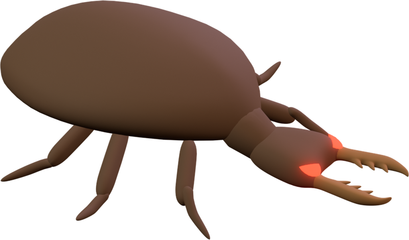
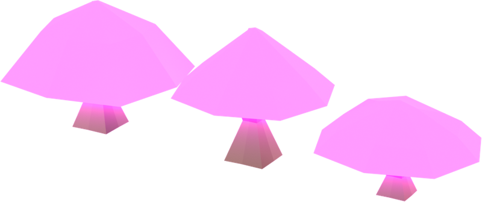
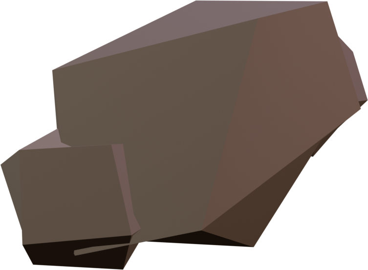
Antlion AI
The antlion uses Unity's NavMesh so it can find its own way around the caves. We first planned for it to spot players by line of sight, but switched to a simpler detection radius so the chase feels fair and is easier to read.
-
Patrol
It picks a random spot nearby and walks there. If it gets stuck or takes too long, it gives up and picks a new spot.
-
Detect
When the player comes within its detection radius, it starts the chase, and the eye icon on screen opens to warn the player.
-
Chase
It follows the player through the tunnels. If it bumps into a wall, it bounces off in a new direction instead of getting stuck.
-
Attack
Once it's close enough, it bites and the player loses one of 3 hearts. Then it freezes for a few seconds so the player has a chance to escape.
-
Pitfall alert
If the player falls into a sand pit, every antlion in the den is alerted and heads straight for them.
Final Design
I built the menu flow and the win and lose scenes. The pixel-art title screen and buttons were drawn by Zainab Shakeel, using the same dirt texture as the caves so the whole game feels underground.
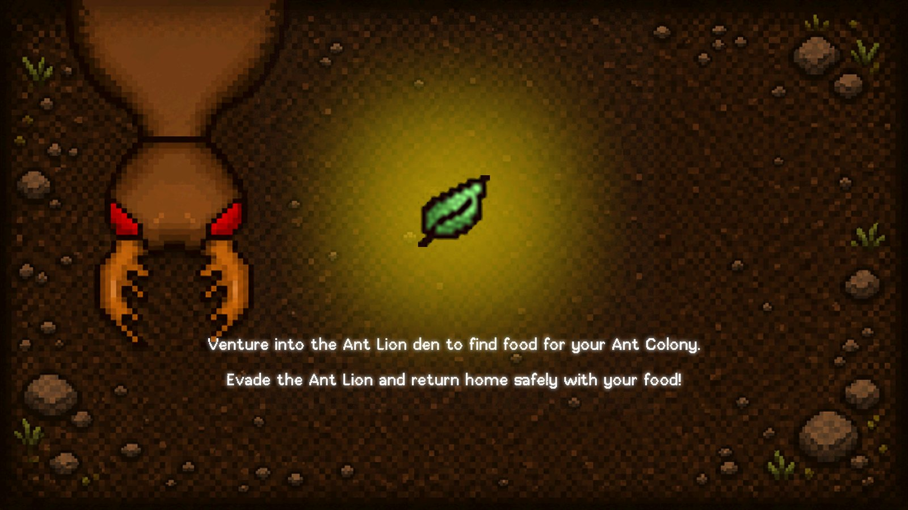
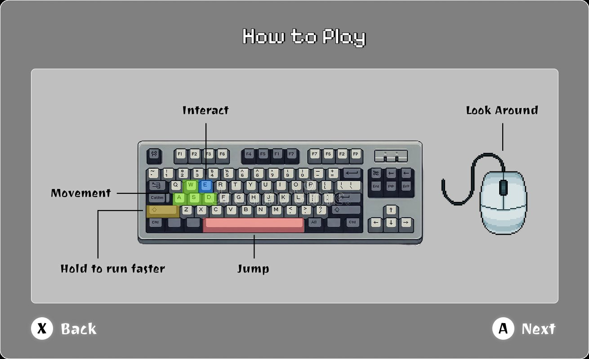
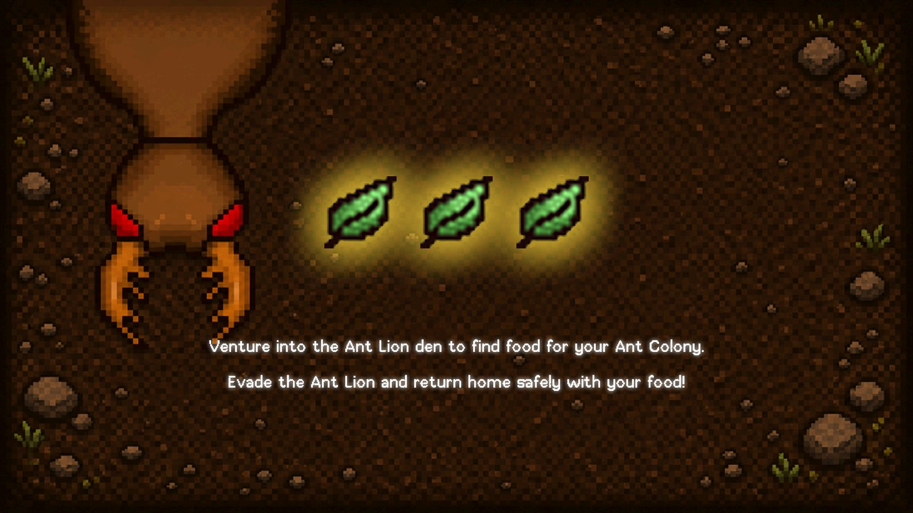
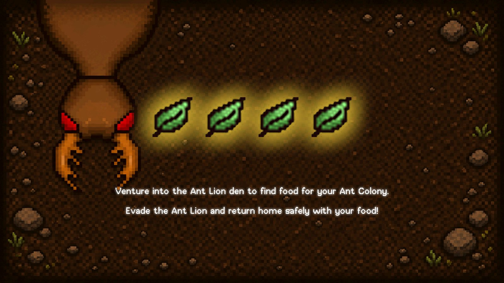
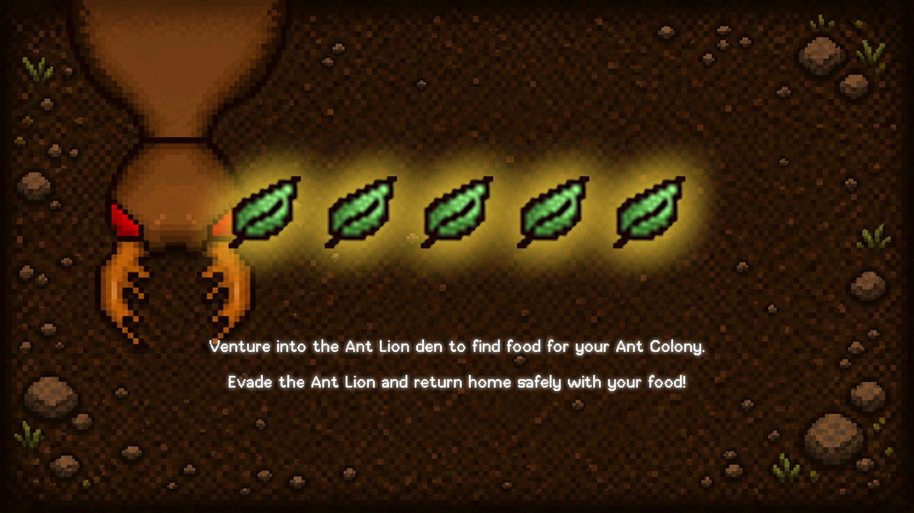
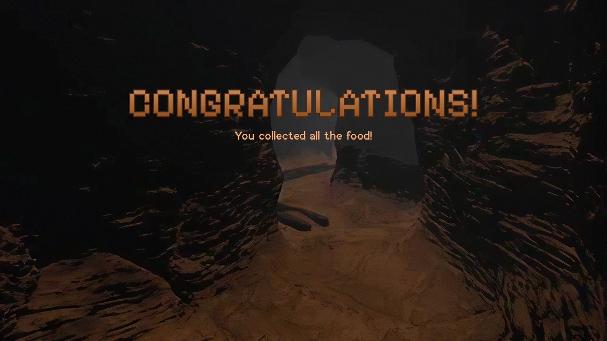
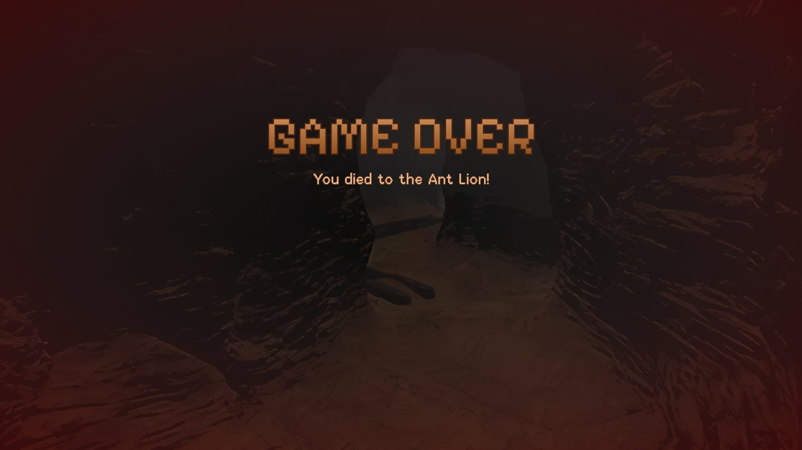
Playtesting
We ran 2 playtest sessions in class with 6 players aged 20–23 (1 casual, 2 intermediate and 3 experienced), who enjoy strategy, survival and challenge games. They tried to finish the main objective while thinking aloud, then we interviewed them about the objective, the antlion, navigation and how fun it felt.
What worked
- Strong tension and an immersive atmosphere.
- Antlion encounters felt scary and exciting.
- Players hid behind rocks and cave corners, and planned their routes.
- Players paused at cave entrances before picking a route, and backtracked when they heard the chase audio.
What didn't
- Players were so focused on surviving they forgot to collect food.
- Nobody was sure how close they could get before the antlion noticed.
- Players got lost in the bigger cave sections.
“The chasing was the most exciting part.”
“I felt safe when I found a safe path back.”
“I was more focused on surviving than collecting resources.”
“I wasn't sure if the Ant Lion could see through rocks or walls.”
What We Changed
-
Clearer objective
“Running around was so much fun that I literally forgot I was supposed to find food.”
Added eye-catching lever gates, stronger highlights on the food and a clearer objective tracker so players remember their goal.
-
Readable antlion
“I'm not sure how close I can get before the Ant Lion notices me.”
Added a pursuit icon and chase audio so players know when they're being hunted, and made the antlion freeze after a bite so players can escape.
-
Easier navigation
“I feel like I'm running in circles. I don't know if I already visited this area...”
Added landmarks, lighting cues and more distinct cave areas. The glowing mushrooms help players recognize where they've already been.
Challenges & Reflection
Challenges
- Stopping the antlion from getting stuck on walls and rocks while it patrols.
- Making the caves dark enough to feel scary but still easy to find your way through.
- Getting the antlion to turn and face the way it moves.
- Testing every difficulty to make sure the game could always be won and lost fairly.
Reflection
Pitfall let me take a character all the way from a Maya model to a working enemy in the game. Watching playtesters run from the antlion showed me how much modeling, AI and lighting work together to create a feeling. Playtesting also taught me that players need clear signals, like a pursuit icon or a glowing landmark, to make smart choices under pressure.
Next steps
- A home base that looks different from the antlion's cave, with a real model for dropping off leaves instead of a hole.
- A bigger map with more detailed rooms, hallways and cave plants.
- A way to fight back against the antlion, which players asked for.
Demo
A walkthrough of Pitfall.
Credits
Development & 3D
- Nina Vo — antlion, mushroom, rock and root models, antlion AI, menu flow, win and lose scenes, map decoration, leaf animation, and menu sound and music.
- Byunghee Choi — player movement and states, map layout, post-processing, level balancing, the leaf drop-off, character art and animation, and the lever model and animation.
UX, UI & Pixel Art
- Jasper Ling — UX and gameplay design: the interface, UI states for health, stamina and interactions, and how the mechanics connect.
- Zainab Shakeel — pixel art for the health icon, stamina bar, leaf, pitfall, energy orb, pursuit icons and the dirt and root textures, plus the title screen, buttons and game screen style.